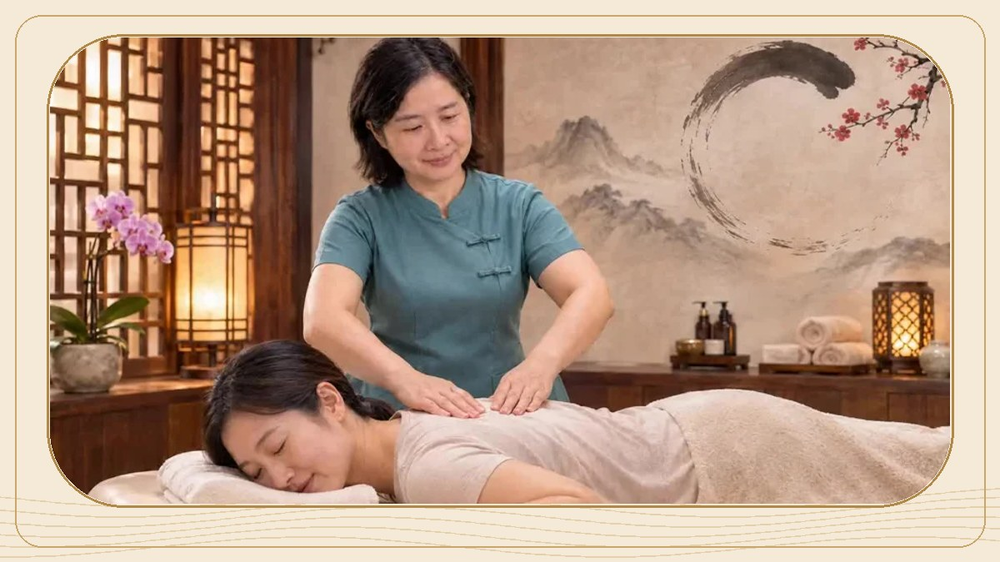

從小幅環旋、節奏變化和遮巾感受認識揉式手技，不將動作幅度視為效果。
從接觸的變化理解揉式
揉式在品牌四式示意中以小範圍的環旋動作呈現。觀看時不必專注於精確路徑，而可辨認相較於定點停留的按式，揉式有較明顯的連續變化。這種分類是認識手技風格的方法，不代表所有從業者使用同一套命名，也不表示環旋接觸必然帶來特定生理結果。選擇手技仍須回到個人喜好與服務內容。
柔和是一種感受，不是一個固定標準
有的人喜歡變化較小的接觸，有的人對重複動作較為敏感。相同動作可能因衣物、遮巾與接觸面的不同而有不同感受，因此「柔和」不能只從影片看出來。服務前可先說明自己對快慢、觸碰範圍或衣著安排的偏好。若對環旋接觸沒有經驗，可以先詢問會如何進行溝通，不需要先在家模仿。
隔巾畫面如何閱讀
目前品牌的揉式影片使用隔巾情境呈現，這是一種視覺示意，而非固定承諾。遮蓋方式涉及個人隱私和服務安排，接受者有權先確認。不應把影片中的衣著、毛巾或背景當成實際場地的紀錄。若自己更習慣保留衣物、避免某些部位或希望先了解接觸方式，可以在預約前提出。
從喜歡的節奏開始對話
可以回想日常生活中自己比較容易接受的是安定的停留，還是有變化的接觸。不必以耐受程度評價自己的身體，也不必以他人的經驗作為標準。若與服務者談過之後仍有疑慮，可以選擇不安排某一式。若在過程中感到不舒服，直接要求停下比勉強完成原定流程更合適。
手技名稱不是自我操作處方
即使知道揉式有環旋特色，也不能據此推論某個部位應使用多大力量或多少次數。對於身體不適、近期受傷或不確定是否適合按摩的人，應先由醫療人員評估。民俗調理的定位是一般紓緩放鬆，不應將環旋動作解讀為治療方式。本文只提供辨識及溝通所需的知識，並非授課內容。
預約前如何比較兩種手法
若在按式和揉式之間猶豫，可以先觀看兩段短片，留意畫面上接觸停留與小幅變化的不同，再詢問服務者實際如何安排。比較的目的不是決定哪個比較厲害，而是知道自己想了解哪一類感受，並保留不接受的選項。
常見問題：動作幅度越大越好嗎？
不必如此理解。幅度較大或較小，只是不同呈現方式的一部分。觀看四式品牌影片可幫助建立共同語彙，真正的選擇仍須以雙方確認的服務範圍及本人感受為準。如果希望節奏放慢或改用其他接觸方式，應在當下提出。
參考資料
衛福部｜民俗調理業者刊登廣告要注意（查閱：2026-11-26）
美國 NCCIH｜按摩安全資訊（僅取安全提醒）（查閱：2026-11-26）
本文為一般生活與文化資訊，非個別醫療建議；尚待本人核定。服務項目、費用、時間及地點以洽詢確認為準。